01ภาพรวม
เผ่าพันธุ์หนุ่มผู้มีเทคโนโลยีล้ำ ขยายจักรวรรดิภายใต้อุดมการณ์ 'Greater Good'
02ต้นกำเนิด
ชาว T'au บนดาว T'au เพิ่งพัฒนาจากยุคหินเมื่อไม่กี่พันปีก่อน ช่วงสงครามกลางเมือง Mont'au (ความหวาดกลัว) กลุ่ม Ethereal ปรากฏตัวและรวมชาว T'au ให้เป็นหนึ่งด้วยปรัชญา Tau'va (Greater Good)
จักรวรรดิมนุษย์เคยสำรวจดาว T'au และวางแผนเข้ายึด แต่ Warp storm ขวางไว้หลายพันปี
03เนื้อเรื่องเจาะลึก
เผ่าที่เติบโตเร็วที่สุด
เพียงไม่กี่พันปีก่อน T'au ยังใช้หอกและธนู แต่หลังจาก Ethereal ปรากฏตัวและรวมวรรณะต่าง ๆ พวกเขาก้าวหน้าเร็วมาก จนกลายเป็นจักรวรรดิที่ท้าทายมนุษย์ได้ นักวิชาการบางคนสงสัยว่าเมื่อหลายพันปีก่อนจักรวรรดิเคยพยายามตั้งอาณานิคมบนดาว T'au แต่ถูก Warp storm ขัดขวาง
Spheres of Expansion
T'au ขยายอาณาจักรเป็นระลอก (Sphere Expansion) ระลอกล่าสุดใช้เทคโนโลยี Warp แบบใหม่ที่เสี่ยงสูง และปะทะกับทั้งจักรวรรดิมนุษย์และ Tyranids
04ยุค 30K — ในยุค Great Crusade และ Horus Heresy
ยุค 30K ชาว T'au ยังเป็นชนเผ่ายุคหิน — จักรวรรดิ T'au เพิ่งเกิดขึ้นในช่วง M36–M41 จึงไม่มีบทบาทใด ๆ ในยุค Horus Heresy
ดูภาพรวมยุค 30K ทั้งหมดที่ เนื้อเรื่องยุค 30K และความต่างของสองยุคที่ เปรียบเทียบ 30K vs 40K
05นิสัยและวัฒนธรรม
- ระบบวรรณะ: Fire (ทหาร), Earth (วิศวกร), Air (นักบิน), Water (ทูตและพ่อค้า) และ Ethereal (ผู้ปกครอง)
- ยอมรับเผ่าพันธุ์อื่นเข้าร่วม เช่น Kroot และ Vespid
- แทบไม่มีพลังจิต และมีเงาใน Warp อ่อนมาก
06จุดที่น่าสนใจ
- ชุดรบ Battlesuit และอาวุธพลาสม่ายิงไกล
- Farsight: ผู้บัญชาการที่แยกตัวออกจากจักรวรรดิพร้อมดาบโบราณ
07ความสามารถพิเศษ
สิ่งที่ทำให้ T'au Empire แตกต่างจากทัพอื่น — ทั้งพลังที่ติดตัวมาทั้งเผ่า/ทัพ และความสามารถของบุคคลสำคัญ
ของทั้งเผ่า/ทัพ
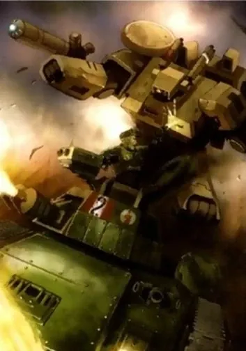
เทคโนโลยีก้าวกระโดด
T'au พัฒนาเทคโนโลยีเร็วมากเพราะไม่มีข้อห้ามทางศาสนา — ปืน Pulse ยิงไกลกว่า Lasgun มาก ชุดเกราะรบ (Battlesuit) บินได้ และโดรนปัญญาประดิษฐ์
The Greater Good
ปรัชญาที่ทุกคนทำงานเพื่อส่วนรวม ทำให้สังคมมีระเบียบและยอมรับเผ่าอื่นเข้าร่วมได้ เช่น Kroot, Vespid และแม้แต่มนุษย์ (Gue'vesa)
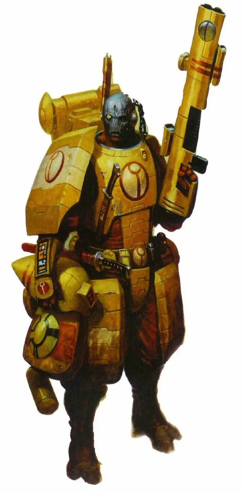
แทบไม่มีตัวตนใน Warp
T'au มีพลังจิตน้อยมาก วิญญาณแทบไม่ปรากฏใน Warp ปีศาจจึงสนใจพวกเขาน้อย แต่ก็ทำให้เดินทางผ่าน Warp ได้ช้าและจำกัด
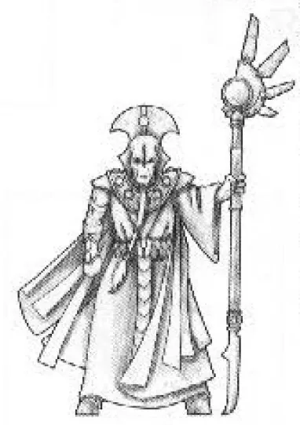
อิทธิพลลึกลับของ Ethereal
วรรณะ Ethereal มีอิทธิพลต่อ T'au อื่นแบบที่อธิบายไม่ได้ บางทฤษฎีเชื่อว่าเป็นฟีโรโมนหรือพลังพิเศษ ทุกคนเชื่อฟังโดยไม่ตั้งคำถาม
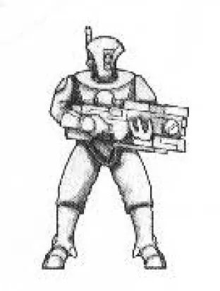
Markerlight — ชี้เป้าให้ทั้งกองทัพ
หน่วย Pathfinder ยิงแสงเลเซอร์ชี้เป้า ทำให้ทุกปืนในกองทัพยิงแม่นขึ้น — การทำงานเป็นทีมที่มนุษย์ไม่มี
ของบุคคลสำคัญ

Commander Farsight
ผู้แปรพักตร์แม่ทัพที่เก่งที่สุดของ T'au ถือดาบ Dawn Blade ที่ได้จากซากปรักหักพัง แยกตัวไปตั้ง Farsight Enclaves และเริ่มสงสัยในคำสอนของ Ethereal

Commander Shadowsun
ผู้ภักดีแม่ทัพหญิงที่ภักดีต่อ Ethereal ใช้ชุดพรางตัว XV22 ทำสงครามแบบลอบโจมตี

Aun'Va
Ethereal สูงสุดผู้นำทางจิตวิญญาณสูงสุดของ T'au Empire ผู้ออกคำสั่งให้ขยายจักรวรรดิ
08หน่วยและบทบาทในกองทัพ
สังคม T'au แบ่งเป็น 5 วรรณะ (Caste) ตามธาตุ — Fire (ทหาร), Earth (ช่าง/วิศวกร), Water (นักการทูต/พ่อค้า), Air (นักบิน) และ Ethereal (ผู้ปกครอง) ทุกคนทำงานเพื่อ "Greater Good"
Ethereal
อีเธอเรียลวรรณะผู้ปกครองสูงสุด มีอิทธิพลลึกลับต่อ T'au ทุกคน ถ้า Ethereal ตายในสนามรบ ขวัญกำลังใจของทหารจะพังทลาย เช่น Aun'Va
Commander (Shas'o/Shas'el)
ผู้บัญชาการนายพลวรรณะไฟในชุดเกราะรบ Battlesuit เช่น Commander Farsight และ Shadowsun
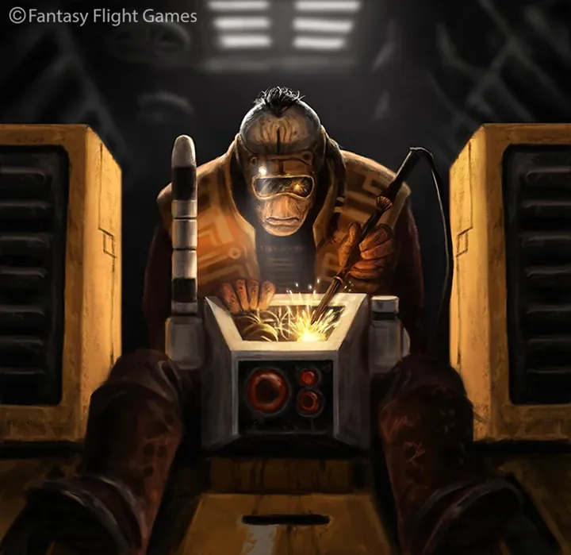
Earth Caste Engineer
วิศวกรวรรณะดิน"ช่าง" ของ T'au ออกแบบ Battlesuit ปืนพลาสมา Drone และยานทุกชนิด เทคโนโลยีก้าวหน้าเร็วมาก
Water Caste
วรรณะน้ำนักการทูตและพ่อค้า เกลี้ยกล่อมดาวอื่นให้เข้าร่วม Empire โดยไม่ต้องรบ
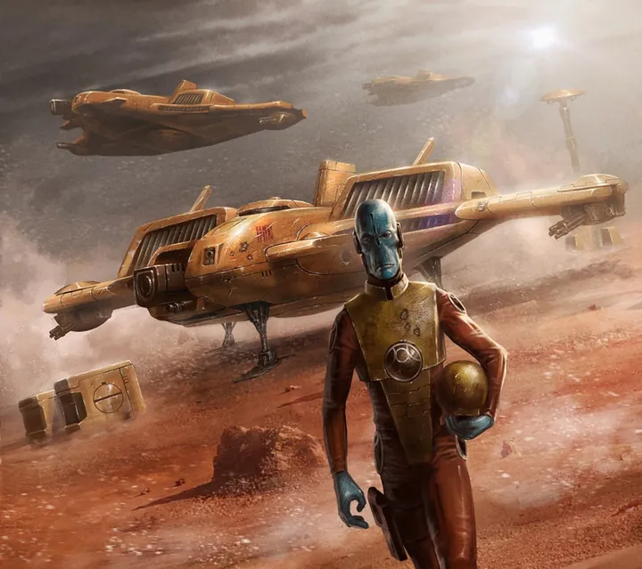
Air Caste
วรรณะอากาศนักบินที่เกิดและโตในอวกาศ ร่างผอมสูง ขับยานรบและยานขนส่ง
Fire Warriors
ไฟร์วอร์ริเออร์ทหารราบวรรณะไฟ ยิงปืน Pulse Rifle ที่แรงและไกลกว่า Lasgun ของมนุษย์มาก
Crisis Battlesuit
ไครซิส แบทเทิลสูทชุดเกราะรบบินได้ ติดอาวุธได้หลายแบบ เป็นเกียรติสูงสุดของทหารวรรณะไฟ
Pathfinders
พาธไฟน์เดอร์หน่วยลาดตระเวนที่ชี้เป้าด้วย Markerlight ให้หน่วยอื่นยิงแม่นขึ้น
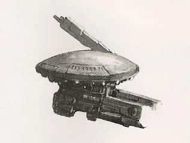
Drones
โดรนหุ่นยนต์ปัญญาจำกัด ช่วยยิง กันกระสุน หรือซ่อม T'au ใช้ AI ได้ ต่างจากมนุษย์
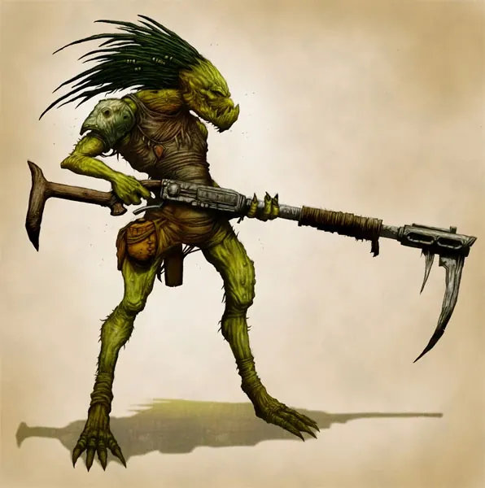
Kroot
ครูตเผ่าต่างดาวพันธมิตร นักล่าที่กินเนื้อศัตรูเพื่อดูดซับพันธุกรรม ทำหน้าที่ทหารรับจ้างและหน่วยป่า
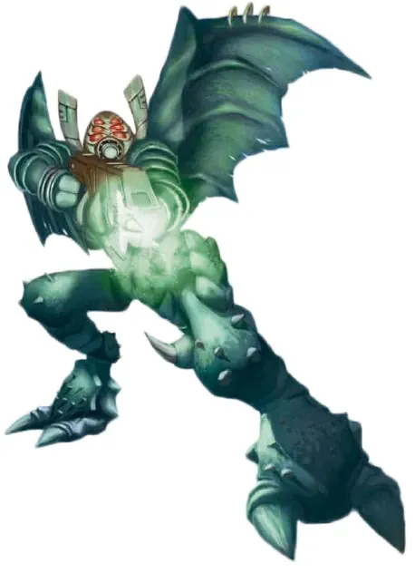
Vespid
เวสปิดเผ่าแมลงมีปีกที่เข้าร่วม Empire ใช้ปืนคลื่นเสียงจากคริสตัล
09วีรกรรมและเหตุการณ์สำคัญ
Damocles Gulf Crusade
ต้านการบุกของจักรวรรดิมนุษย์ได้
Third Sphere Expansion
ขยายอาณาจักรครั้งใหญ่
Fifth Sphere Expansion
ขยายอาณาจักรหลัง Great Rift
10ตัวละครสำคัญ
Aun'Va
Ethereal สูงสุดถูกลอบสังหาร
Commander Shadowsun
ผู้บัญชาการสูงสุดนำ Fifth Sphere Expansion
Commander Farsight
ผู้นำ Farsight Enclavesผู้แยกตัว
11ยุค 40K — สหัสวรรษที่ 41
ยุค 40K T'au เป็นจักรวรรดิเล็กแต่เติบโตเร็วทางตะวันออกของกาแล็กซี
12เนื้อเรื่องล่าสุด (Era Indomitus / M42)
หลัง Aun'Va ถูกลอบสังหาร Shadowsun นำ Fifth Sphere Expansion บุกดินแดนจักรวรรดิที่อ่อนแอจาก Great Rift
หลังการเกิด Great Rift ปฏิทินของจักรวรรดิคลาดเคลื่อน เหตุการณ์ยุคปัจจุบันจึงมักระบุเพียง 'M42' ไม่มีปีที่แน่นอน
13แกลเลอรี
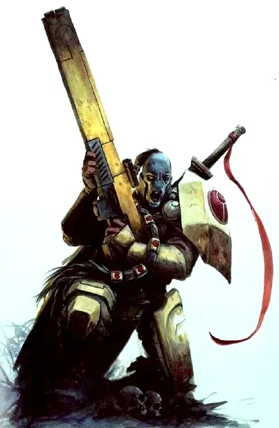
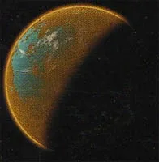